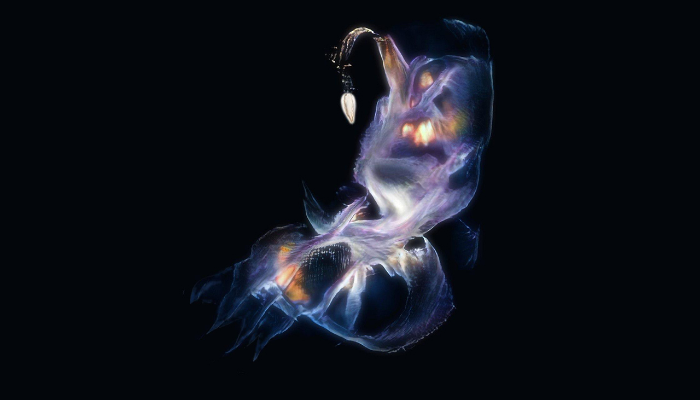
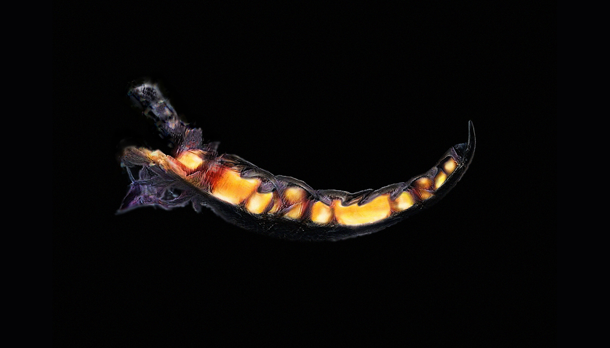
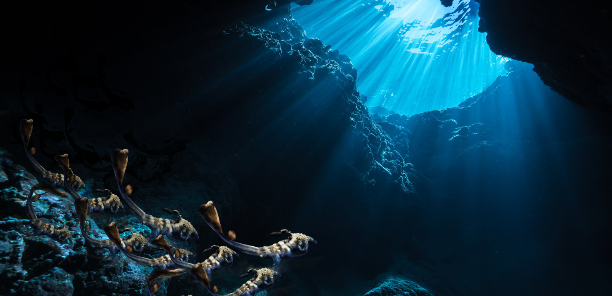
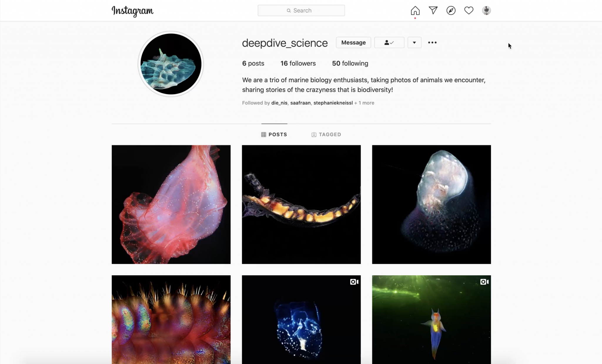
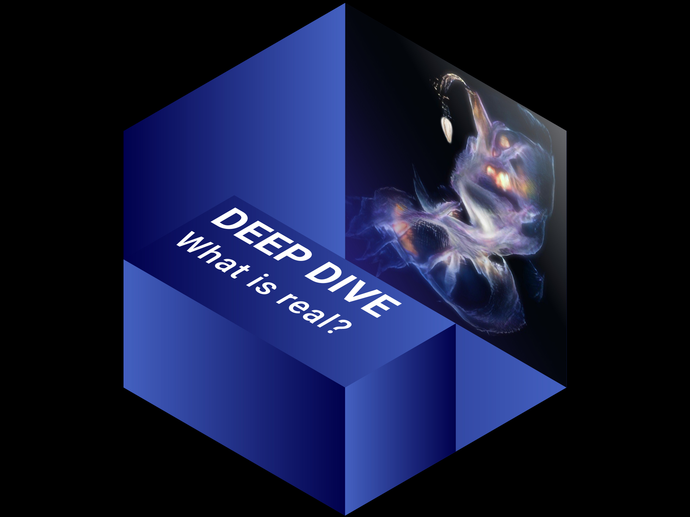

Deep Dive is a documentary project telling a story of several deep sea species inhabiting the depth of an
A.I.-generated 'ocean'. Even though they were discovered in an artificial environment, the animals claim actual
presence in this world by invading public knowledge. They infiltrate the internet, leaving traces of existence in scientific
communities, quasi-educational platforms and channels.
Extravagant and yet realistic, they demand attention, trigger debates and discussions. Belonging to the deep sea – a mystical,
barely explored space, these animals create a room for speculations and possibilities. Where, how often and in which capacity
do these species need to appear in our view to finally be considered a fact? Where does our reality begin?




